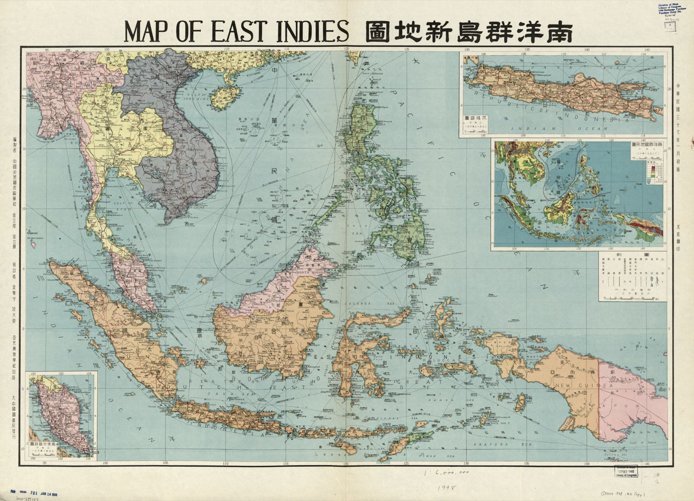
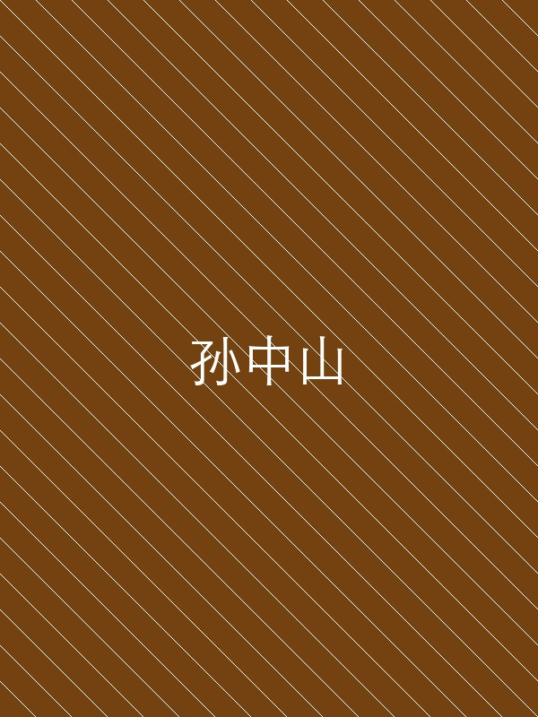
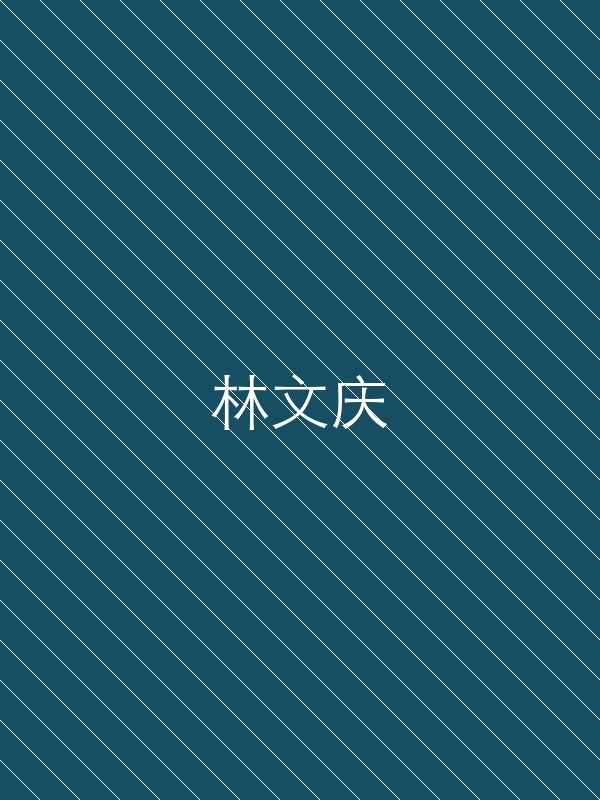

两百五十年间，海外华侨在东南亚创办了数百所中文学校，从教授四书五经到引入科学技术。从私塾到新式学堂，从自发办学到统一管理，从文化传承到救亡图存。
开始阅读 →从第一所海外中文学校的创办，到抗战时期教育成为救亡武器，这些关键节点塑造了南洋华侨教育的面貌。

1690印尼巴达维亚的华侨创办明诚书院，教四书五经。他们不是在"传播文化"，而是在异国他乡维系身份认同——中国人，就要读中国书。这是南洋华侨自发办学的起点，此后两百余年，私塾如雨后春笋般遍布东南亚各大商埠。
查看学校档案 →清廷废除科举制度，南洋华侨紧跟改革。短短二十年间，仅新加坡就从几所私塾激增到260多所新式学堂，教的是国语、算术和体育。传统书院换上"学校"招牌，四书五经让位于国文算术，华侨教育从传统走向现代。
查看完整时间轴 →九一八事变后，岳飞、戚继光大量出现在课本里。国文课多了"义勇军"，地理课多了"东北失地"，体育课多了军事训练——教育成了救亡的武器。课本内容的剧变，让远在南洋的华侨学子与祖国命运紧紧相连。
浏览教材对比 →全面抗战爆发后，国民政府颁布一系列华侨教育政策，从课程设置到师资培训，从经费补助到教材统编，将南洋侨校纳入国家救亡体系。华侨教育从文化传承转变为民族救亡的重要阵地。
查看政策文件 →二百五十年的华侨教育史，可以划分为四个特征鲜明的阶段，每个阶段都折射出华侨社会的变迁与时代的需求。
以私塾和书院为主，教授四书五经，目的是维系中华文化和身份认同。办学完全依靠华侨社群自发组织和捐资，没有统一的制度规范。
废科举、兴学堂的浪潮席卷南洋。私塾纷纷改为新式学堂，引入算术、地理、体育等现代课程。教育目标从"保存文化"拓展到"培养现代公民"。
民国政府开始系统介入华侨教育，颁布侨民教育政策，编审统一教材，建立师范学校培养师资。侨校数量激增，形成覆盖东南亚的教育网络。
九一八事变后，华侨教育全面转向救亡图存。课本充斥抗日内容，学校成为募捐和宣传的阵地。教育与国家命运前所未有地紧密捆绑。
这些人物或捐资办学，或编纂教材，或推动政策，在南洋华侨教育史上留下了不可磨灭的印记。
华侨旗帜 · 教育家
创办厦门大学及新加坡南洋华侨中学，提出"教育为立国之本"，被誉为"华侨旗帜，民族光辉"。

革命先驱 · 思想传播者
革命思想通过华侨学校广泛传播，推动华侨教育从传统私塾向现代国民教育转型。
职业教育倡导者
倡导职业教育与实用教育，主张教育应服务于社会经济发展，影响深远。
华侨教育实践家
长期投身南洋华侨教育事业，创办多所学校，是华侨教育从理论到实践的关键推动者。

教育家 · 厦大校长
曾任厦门大学校长，致力于华侨高等教育发展，将西方教育模式引入华侨学校。
领事 · 教育推动者
中国驻新加坡领事，积极推动当地华侨教育发展，促成多所学校创立。